Uji Kompetensi mahasiswa Program Pendidikan Vokasi Gizi (Diploma III Gizi dan Sarjana Terapan Gizi) dengan metode Objective Structured Clinical Examination (OSCE) menilai kemampuan peserta sampai tahap show how. Peserta berpindah dari satu station ke station berikutnya, dan pada setiap station penguji menilai kinerja peserta menggunakan rubrik terstandar, lalu memberikan penilaian kesan umum (global performance).
Penilaian secara manual di atas kertas membutuhkan waktu rekapitulasi yang panjang, rentan salah hitung, dan menyulitkan penghitungan Nilai Batas Lulus dengan Borderline Regression Method sebagaimana diamanatkan pedoman. Karena itu Bidang IT AIPVOGI mengembangkan Aplikasi Penguji OSCE Vokasi Gizi: aplikasi web progresif (PWA) yang dipakai penguji untuk menginput nilai langsung di station, menyimpan data ke Google Sheets, dan menghasilkan rekap kelulusan dalam format Excel.
Aplikasi dan buku manual ini mengacu pada Pedoman Penyelenggaraan Uji Kompetensi dengan Metode OSCE Vokasi Gizi yang disusun bersama oleh DPP PERSAGI, Kolegium Ilmu Gizi Indonesia (KIGI), dan AIPVOGI, beserta Surat Edaran Bersama tanggal 7 Agustus 2023 tentang himbauan penyelenggaraan Uji Kompetensi metode OSCE secara mandiri institusional.
| Istilah | Pengertian |
|---|---|
| OSCE | Metode uji kompetensi klinik secara objektif dan terstruktur dalam bentuk rotasi station dengan alokasi waktu tertentu. |
| Station | Pos ujian berisi satu kasus dan tugas yang dinilai satu penguji. D3 Gizi: 8 station (6 aktif, 2 istirahat); Sarjana Terapan Gizi: 9 station (7 aktif, 2 istirahat). |
| Rubrik | Lembar penilaian berisi butir kompetensi dengan kriteria skor 0, 1, 2, 3 dan bobot 1 (mudah), 2 (sedang), 3 (sulit). |
| Actual Mark (AM) | Jumlah skor butir × bobot pada satu station. |
| Global Rating (GR) | Kesan umum penguji: 1 Tidak Lulus, 2 Borderline, 3 Lulus, 4 Superior. |
| Nilai Batas Lulus (NBL) | Skor minimal untuk lulus suatu station, dihitung dengan Borderline Regression Method. |
| Paket | Kumpulan station dan rubrik yang dipakai pada suatu periode ujian (mis. D3-STANDAR). |
| Periode | Satu penyelenggaraan ujian untuk satu program (D3 atau Sarjana Terapan). |
| PWA | Progressive Web App: aplikasi web yang dapat dipasang di layar utama perangkat dan tetap berjalan tanpa internet. |
| Sinkronisasi | Proses pengiriman nilai yang tersimpan di perangkat ke database Google Sheets. |
Aplikasi terdiri atas tiga komponen yang semuanya dapat digunakan tanpa biaya:
| Komponen | Layanan | Fungsi |
|---|---|---|
| Aplikasi (tampilan) | GitHub Pages aipvogiofficial.github.io/Penguji-OSCE | Halaman yang dibuka penguji dan admin; dapat dipasang sebagai aplikasi (PWA). |
| Penghubung (API) | Google Apps Script (Web App) | Memeriksa PIN, mengirim data peserta/rubrik, dan menyimpan nilai ke Sheet. |
| Database | Google Sheets | Menyimpan periode, paket, station, rubrik, peserta, penguji, nilai, dan log. |
Data peserta dan nilai hanya tersimpan di Google Sheets milik akun AIPVOGI, tidak di GitHub. Setiap pengiriman nilai diperiksa PIN dan kewenangannya oleh Apps Script. Jangan membagikan file Google Sheets secara publik.
| Peran | Kewenangan |
|---|---|
| Admin | Mengisi data di Google Sheets, memantau progres seluruh station, melihat NBL dan hasil kelulusan, mengunduh Excel rekap, mengimpor file cadangan, dan mengoreksi nilai. |
| Penguji | Login dengan PIN, melihat daftar peserta dan rubrik station yang ditugaskan, menginput dan mengunci nilai, mengunduh file cadangan. |
| Diploma III Gizi | Sarjana Terapan Gizi | |
|---|---|---|
| Jumlah station | 8 (6 aktif + 2 istirahat) | 9 (7 aktif + 2 istirahat) |
| Station istirahat | Station 4 dan 8 | Station 4 dan 9 |
| Waktu per station | 10 menit (1 baca, 8 kerja, 1 pindah) | 12 menit (1 baca, 10 kerja, 1 pindah) |
| Kode paket standar | D3-STANDAR | STR-STANDAR |
| Syarat lulus | Lulus pada seluruh station aktif | |
Saat pertama kali disiapkan, database otomatis berisi rubrik standar sesuai Lampiran III pedoman. Ringkasan butir dan bobot setiap station:
Bab ini ditujukan bagi admin atau pengelola TI. Instalasi cukup dilakukan satu kali. Seluruh langkah menggunakan akun Google dan akun GitHub resmi AIPVOGI.
Code.gs, lalu tempel seluruh isi file apps-script/Code.gs dari paket aplikasi. Klik ikon simpan.setup pada dropdown, lalu klik ▶ Jalankan. Pada permintaan izin pilih Tinjau izin → pilih akun → Lanjutan → Buka proyek → Izinkan.Segera ganti PIN admin 909090 di tab PENGUJI dengan angka lain yang hanya diketahui admin.
/exec.{"ok":true,"app":"Penguji OSCE Vokasi Gizi",...}, API sudah aktif.Gunakan Terapkan → Kelola deployment → Edit (ikon pensil) → Versi: Versi baru → Terapkan. Dengan cara ini URL Web App tidak berubah.
Buka file js/config.js lalu isi API_URL dengan URL Web App. Pengaturan lain dalam file yang sama:
| Pengaturan | Bawaan | Keterangan |
|---|---|---|
API_URL | - | URL Web App Apps Script (wajib). |
INTERVAL_SINKRON | 30000 | Jeda pengiriman otomatis nilai (milidetik). |
MIN_PESERTA_BRM | 10 | Jumlah minimal peserta dinilai per station agar Borderline Regression dipakai. |
css, js, icons, vendor), lalu Commit changes.Bila file Code.gs berubah, tempel ulang isinya di editor Apps Script lalu terapkan sebagai versi baru (Subbab 3.2) agar URL tetap sama. Setiap kali berkas aplikasi diubah, naikkan nomor versi pada baris var VERSI = 'penguji-osce-v1.2.0' di file sw.js (misalnya menjadi v1.2.1). Perangkat penguji akan menampilkan pemberitahuan Versi baru aplikasi tersedia → Muat ulang.
Seluruh data ujian dikelola admin langsung di Google Sheets. Baris pertama setiap tab adalah judul kolom dan tidak boleh diubah. Data diisi mulai baris kedua; data dari Excel dapat disalin-tempel.
| Tab | Isi | Diisi oleh |
|---|---|---|
| PERIODE | Daftar periode ujian, program, paket rubrik, status. | Admin |
| PAKET | Daftar paket rubrik dan status terkunci. | Otomatis / admin |
| STATION | Daftar station per paket (judul, kasus, istirahat, waktu). | Otomatis / admin |
| RUBRIK | Butir kompetensi, kriteria skor 0–3, dan bobot per station. | Otomatis / admin |
| PESERTA | Daftar mahasiswa per periode dan nomor urut rotasi. | Admin |
| PENGUJI | PIN, nama, station tugas, dan peran (penguji/admin). | Admin |
| NILAI | Nilai yang dikirim penguji. | Otomatis (aplikasi) |
| LOG | Catatan aktivitas login dan penyimpanan. | Otomatis |
| Kode Periode | Nama Periode | Program | Kode Paket | Tanggal | Status | Batas Cad. (%) |
|---|---|---|---|---|---|---|
| D3-2026-01 | OSCE D3 Gizi Periode I 2026 | D3 | D3-STANDAR | 2026-11-20 | AKTIF | 60 |
| STR-2026-01 | OSCE Sarjana Terapan Gizi Periode I 2026 | STR | STR-STANDAR | 2026-11-21 | AKTIF | 60 |
D3 atau STR.D3-STANDAR, STR-STANDAR, atau paket buatan sendiri).AKTIF agar penguji dapat login dan mengirim nilai; ubah menjadi SELESAI setelah ujian berakhir.| Kode Periode | No Urut | NIM | Nama | Sesi | Grup |
|---|---|---|---|---|---|
| D3-2026-01 | 1 | PO7124123001 | Andi Rahmawati | 1 | A |
| D3-2026-01 | 2 | PO7124123002 | Budi Santoso | 1 | A |
No Urut menentukan urutan peserta di layar penguji (urutan rotasi). NIM harus unik dalam satu periode. Kolom Sesi dan Grup bersifat opsional.
| PIN | Nama | Asal Institusi | Jenis | Peran | Kode Periode | No St. | Aktif |
|---|---|---|---|---|---|---|---|
| 583921 | Dr. Siti Aminah, M.Gz | Poltekkes A | Internal | PENGUJI | D3-2026-01 | 1 | YA |
| 274615 | Hasan, S.Gz, M.Kes | Poltekkes B | Eksternal | PENGUJI | D3-2026-01 | 2 | YA |
| (rahasia) | Administrator | ADMIN | YA |
TIDAK dan ubah ke YA saat dibutuhkan.Tab ini diisi otomatis oleh aplikasi. Setiap baris adalah nilai satu peserta di satu station: skor butir (B1–B8), Global Rating, catatan, nama penguji, Waktu Penilaian (jam setempat penguji, misalnya 2026-11-20 09:15:02 WIT), dan Waktu Diterima (jam server). Kolom Kunci (periode|station|NIM) mencegah nilai ganda.
Bila nilai perlu dikoreksi (misalnya salah pilih skor), admin mengubah langsung kolom B1–B8 atau Global Rating pada baris yang bersangkutan dan menuliskan alasan pada kolom Keterangan. Rekap selalu dihitung ulang dari skor butir sehingga total tidak perlu diperbaiki manual.
Rubrik disimpan di Google Sheets dalam bentuk paket, sehingga perubahan tidak memerlukan perubahan aplikasi. Paket otomatis ditandai Terkunci = YA begitu ada nilai yang masuk. Ada tiga cara menyiapkan rubrik baru:
Rubrik tidak perlu diketik ulang. Admin cukup mengunggah file soal yang disusun dosen sesuai template Lampiran III pedoman; aplikasi membaca nomor station dan tabel Rubrik Penilaian (kompetensi, kriteria skor 0–3, bobot). File dibaca di perangkat admin dan tidak diunggah ke mana pun; skenario klinik serta instruksi penguji dan pemeran standar tidak dibaca.
D3-2027-A) dan keterangan.St5_Stunting.docx); bila tidak terbaca, pilih manual.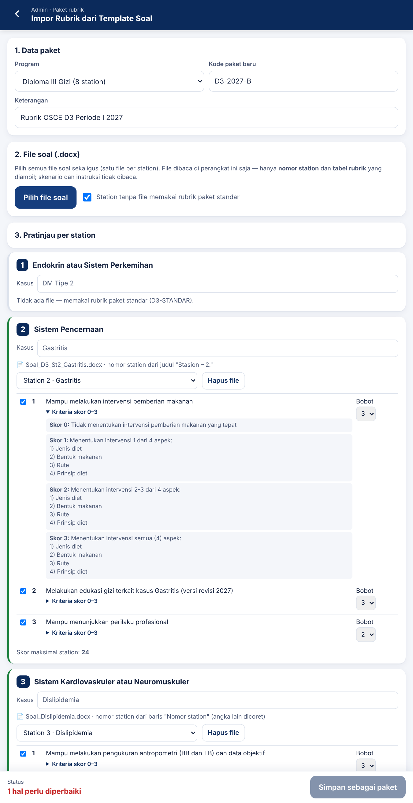
Gunakan template soal sesuai pedoman tanpa mengubah susunan kolom tabel rubrik (NO, Kompetensi, Skor = 0, Skor = 1, Skor = 2, Skor = 3, Bobot). Satu file berisi satu station. Sub-butir bernomor 1.1, 1.2, dst. dibaca sebagai butir tersendiri dengan judul induknya.
D3-2027 | D3 | Rubrik periode 2027 | TIDAK.D3-2027, lalu sesuaikan judul/kasus.D3-2027.Rekap dihitung menggunakan bobot yang tercatat di Sheet. Mengubah bobot paket yang sudah dipakai akan mengubah hasil periode lama. Untuk perubahan apa pun pada paket terkunci, buatlah paket baru.
Muat ulang Google Sheet hingga menu OSCE muncul, lalu pilih OSCE → Isi data contoh. Sistem menambahkan periode UJICOBA-D3 dan UJICOBA-STR, masing-masing dengan 10 peserta contoh, serta PIN penguji contoh: D3 3101, 3102, 3103, 3105, 3106, 3107 dan Sarjana Terapan 4101, 4102, 4103, 4105, 4106, 4107, 4108 (angka terakhir = nomor station). Hapus atau ubah status periode uji coba menjadi SELESAI sebelum ujian sesungguhnya.
Buka alamat aipvogiofficial.github.io/Penguji-OSCE. Halaman cover menampilkan logo AIPVOGI dan tombol Masuk dengan PIN. Disarankan memasang aplikasi ke layar utama agar data penilaian lebih aman:
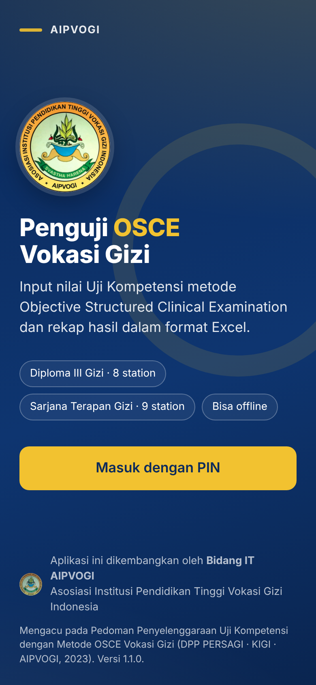
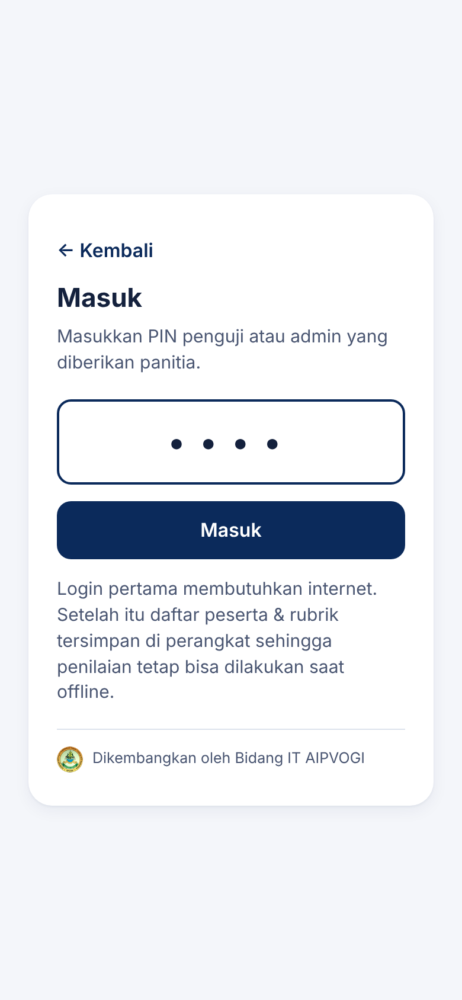
Bagian atas menampilkan nomor station, periode, nama penguji, status koneksi, serta jumlah peserta yang sudah dan belum dinilai. Peserta diurutkan sesuai nomor urut rotasi dan dapat dicari berdasarkan nama, NIM, atau nomor urut. Arti label status:
| Label | Arti |
|---|---|
| Belum / Draf | Belum dinilai / sudah diisi sebagian tetapi belum disimpan. |
| Belum terkirim | Nilai sudah disimpan dan dikunci di perangkat, menunggu internet. |
| Terkirim ✓ | Nilai sudah tercatat di Google Sheets. |
| Konflik / Ditolak | Server menolak nilai (misalnya peserta sudah dinilai penguji lain). Hubungi admin. |
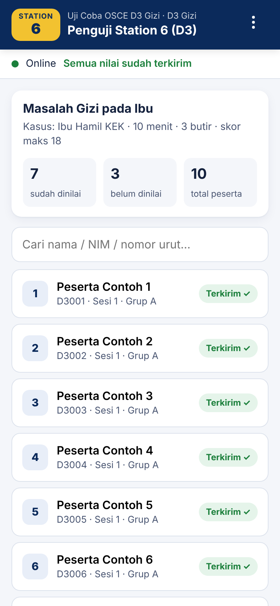
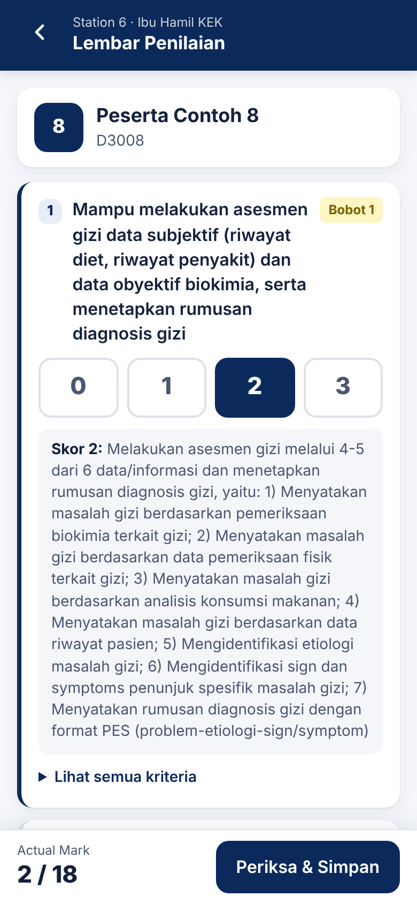
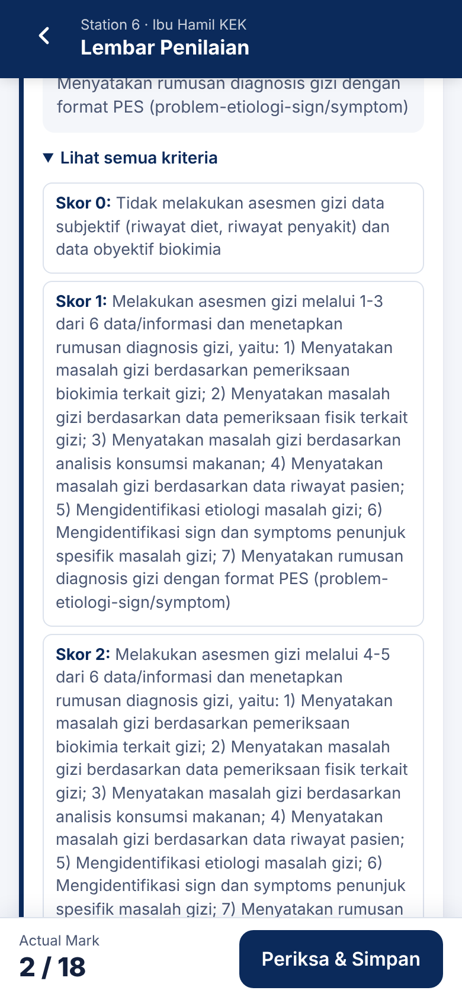
Isian yang belum disimpan tersimpan otomatis sebagai draf. Bila aplikasi tertutup atau Anda kembali ke daftar, isian tidak hilang.
Sesuai pedoman, penguji wajib meneliti kembali penilaian sebelum menilai peserta berikutnya. Layar Periksa kembali penilaian menampilkan skor, bobot, nilai per butir, Actual Mark, dan Global Performance. Centang pernyataan Saya sudah meneliti kembali penilaian ini, lalu ketuk Simpan & Kunci.
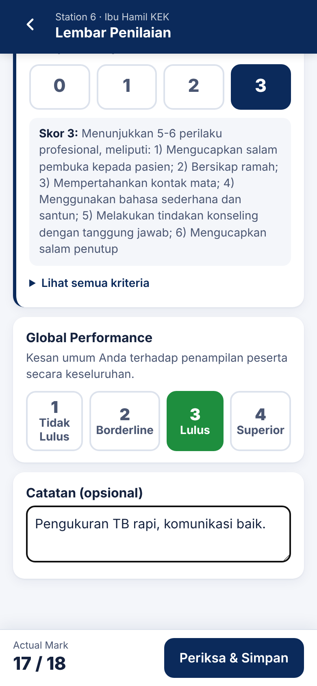
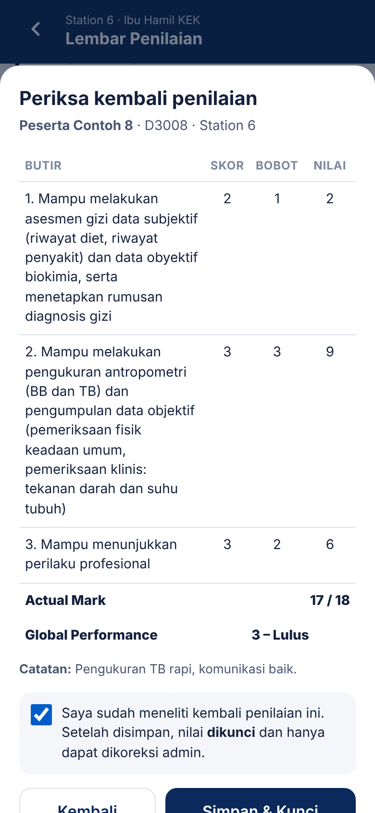
Setelah disimpan, nilai terkunci dan tidak dapat diubah dari perangkat penguji. Bila ternyata ada kesalahan, laporkan kepada admin untuk dikoreksi (Subbab 4.5).
Bila koneksi terputus, bilah status berubah menjadi Offline. Penilaian tetap dapat dilakukan seperti biasa; nilai disimpan di perangkat dengan label Belum terkirim dan bilah status menampilkan jumlah nilai yang belum terkirim. Begitu internet tersambung kembali, nilai terkirim otomatis. Anda juga dapat mengetuk Kirim sekarang.
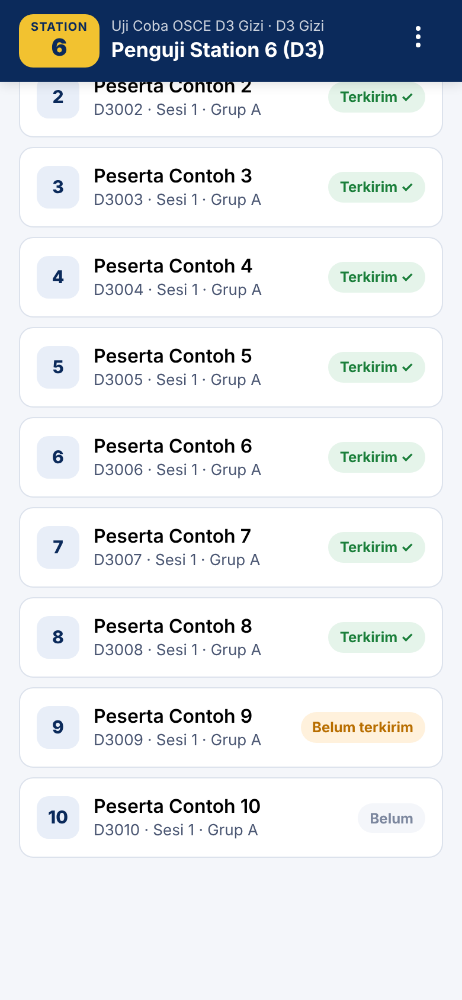
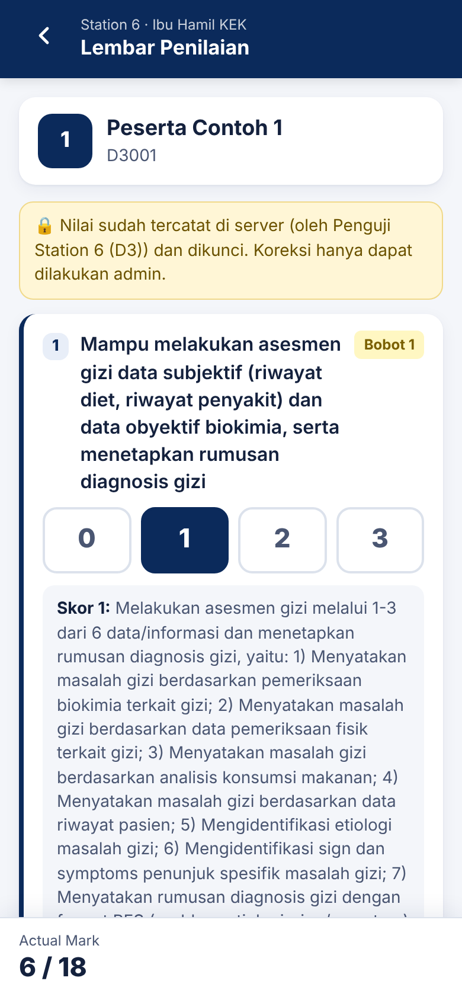
Ketuk ikon ⋮ di kanan atas untuk membuka menu:
| Menu | Fungsi |
|---|---|
| Kirim nilai sekarang | Mengirim seluruh nilai yang belum terkirim. |
| Muat ulang data peserta & rubrik | Mengambil data terbaru dari Sheet (misalnya ada peserta tambahan atau rubrik diperbarui). Memerlukan internet. |
| Unduh file cadangan nilai | Menyimpan seluruh nilai di perangkat sebagai file .json. |
| Lihat rubrik station | Menampilkan rubrik lengkap station Anda. |
| Info penyimpanan perangkat | Menampilkan jumlah nilai di perangkat, status penyimpanan permanen, dan status pemasangan aplikasi. |
| Keluar | Keluar dari akun. Ditolak bila masih ada nilai yang belum terkirim. |
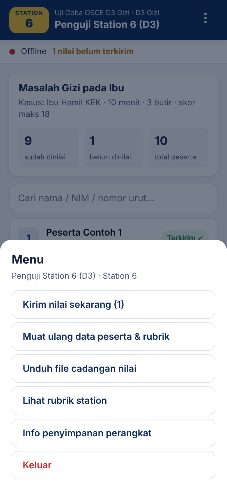
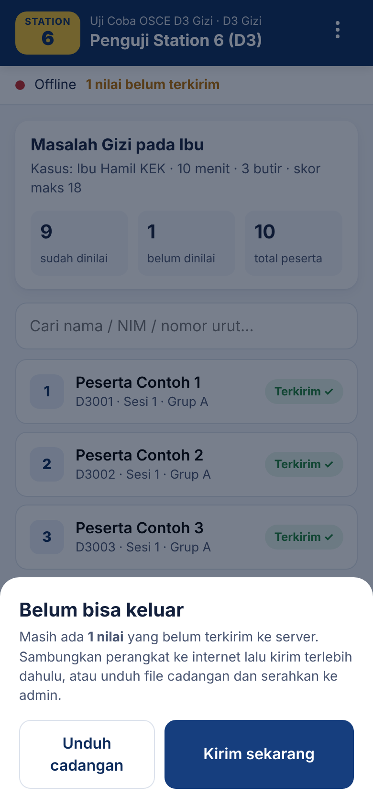
Menampilkan jumlah nilai yang sudah masuk pada setiap station beserta nama penguji yang bertugas. Bilah progres di bagian atas menunjukkan persentase seluruh nilai yang sudah masuk.
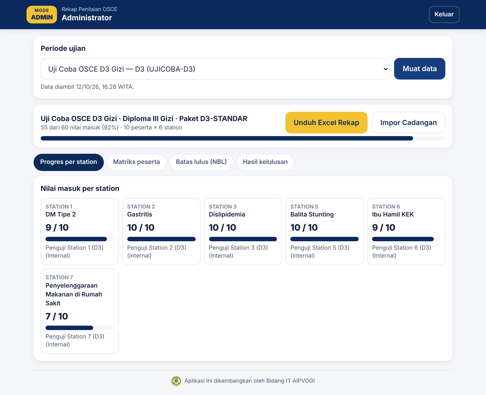
Tabel peserta × station berisi Actual Mark dan Global Rating. Sel hijau berarti lulus station, merah berarti tidak lulus, dan tanda "–" berarti belum dinilai. Selama nilai belum lengkap, NBL dan status masih bersifat sementara.
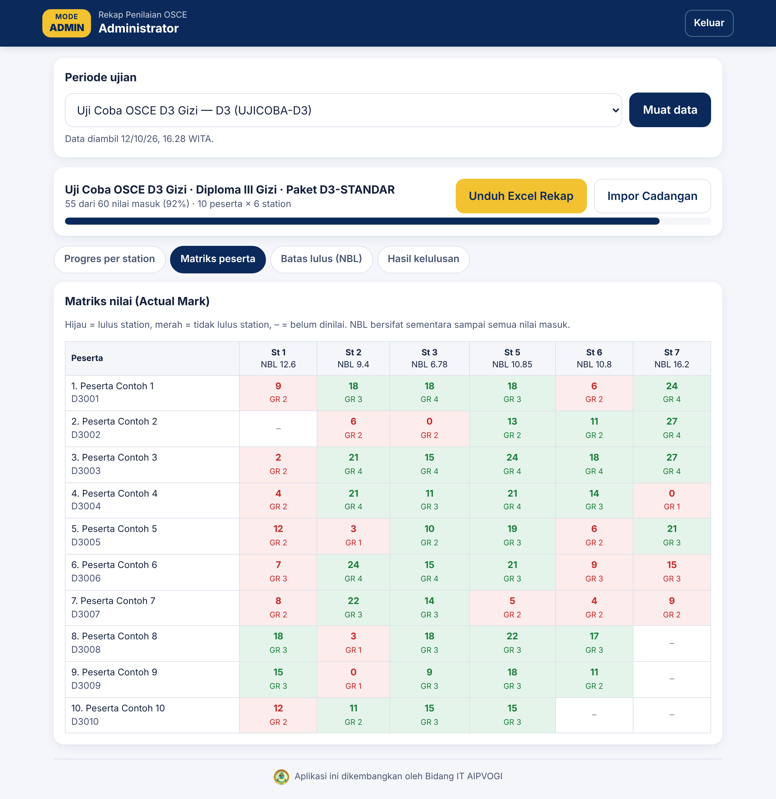
Menampilkan untuk setiap station: skor maksimal, jumlah peserta dinilai (n), koefisien regresi a dan b, R², NBL, serta metode yang digunakan. Penjelasan perhitungan terdapat pada BAB VII.
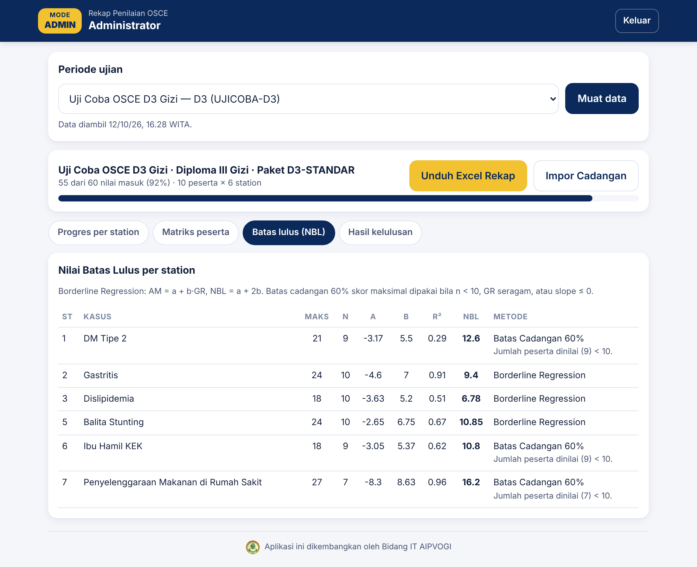
Menampilkan jumlah peserta Lulus, Tidak Lulus, dan Belum Lengkap, serta daftar station yang tidak lulus untuk setiap peserta.
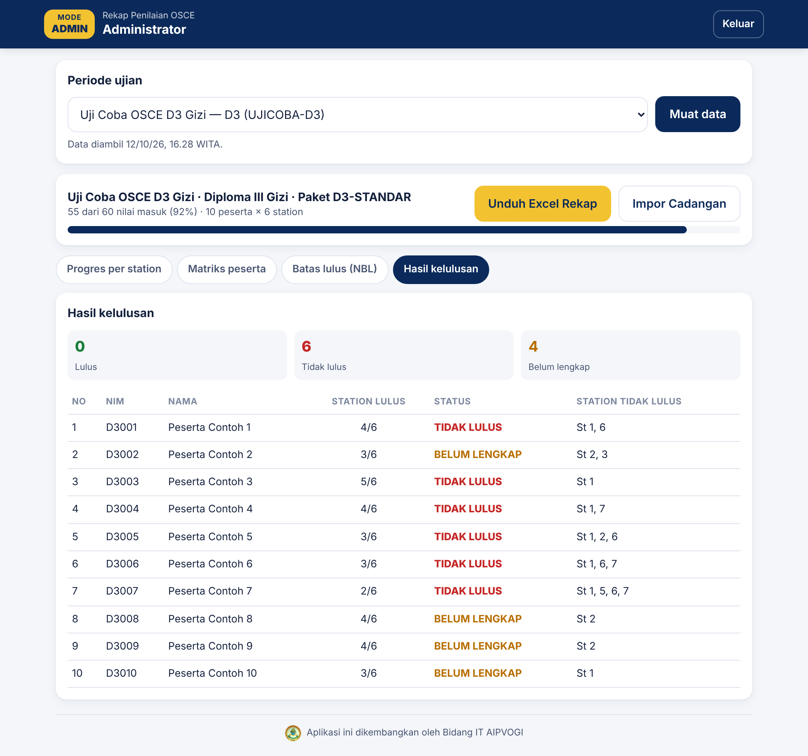
Klik Unduh Excel Rekap. File Rekap_OSCE_[kode periode]_[tanggal-jam].xlsx berisi:
| Sheet | Isi |
|---|---|
| Rekap | Peserta × station: AM, GR, keterangan L/TL; jumlah station lulus; status akhir; station tidak lulus. |
| NBL | Skor maksimal, n, a, b, R², NBL (nilai dan persen), metode, jumlah lulus/tidak lulus per station. |
| St1 … St8 | Detail per station: skor setiap butir, AM, persentase, GR, status station, penguji, waktu penilaian (jam setempat), catatan, serta daftar butir. |
| Info | Identitas periode, paket, jumlah peserta, kelengkapan nilai, waktu unduh, acuan, dan pengembang. |
Bila perangkat penguji rusak, hilang, atau tidak sempat mengirim nilai, nilai dapat dipulihkan dari file cadangan (.json) milik penguji:
Setiap butir kompetensi diberi skor 0–3 dan dikalikan bobotnya. Actual Mark (AM) station adalah jumlah seluruh hasil kali tersebut.
Contoh D3 station 1 (DM Tipe 2), butir berbobot 1, 3, 1, 2 dengan skor 2, 3, 1, 3: AM = 2×1 + 3×3 + 1×1 + 3×2 = 18 dari skor maksimal 21.
Penguji memberikan kesan umum terhadap penampilan peserta secara keseluruhan: 1 Tidak Lulus, 2 Borderline (batas bawah kelulusan), 3 Lulus, 4 Superior. Global rating diberikan secara independen dari penghitungan skor butir.
Untuk setiap station, aplikasi menghitung regresi linear dengan Global Rating sebagai variabel bebas dan Actual Mark sebagai variabel terikat, menggunakan data seluruh peserta pada periode tersebut:
NBL adalah nilai AM pada titik GR = 2 (borderline), yaitu kemampuan minimum seorang nutrisionis untuk station tersebut. Peserta lulus station bila AM ≥ NBL.
Regresi tidak dapat diandalkan bila datanya terlalu sedikit atau tidak bervariasi. Pada kondisi berikut aplikasi memakai Batas Cadangan = persentase (kolom Batas Cadangan (%) di tab PERIODE, bawaan 60%) × skor maksimal station:
MIN_PESERTA_BRM);Metode yang dipakai untuk setiap station selalu dicantumkan pada tab NBL di aplikasi dan di Excel rekap.
| Status | Kondisi |
|---|---|
| LULUS | Lulus pada seluruh station aktif (D3: 6 station; Sarjana Terapan: 7 station). |
| TIDAK LULUS | Tidak lulus pada satu station atau lebih; station yang tidak lulus dicantumkan. |
| BELUM LENGKAP | Masih ada station yang belum dinilai. |
NBL dihitung dari seluruh peserta pada periode yang sama. Unduh Excel rekap final setelah semua nilai masuk (progres 100%). Pengumuman hasil paling lambat 2 minggu setelah ujian, dan peserta yang tidak lulus dapat mengikuti ujian ulang selama masih dalam masa studi.
Aplikasi dapat digunakan di seluruh wilayah Indonesia. Waktu penilaian tercatat sesuai jam perangkat penguji beserta zonanya: WIB (Sumatera, Jawa, Kalimantan Barat dan Tengah), WITA (Bali, Nusa Tenggara, Kalimantan Selatan, Timur, dan Utara, Sulawesi), atau WIT (Maluku dan Papua). Pastikan pengaturan tanggal dan waktu perangkat penguji dalam mode otomatis.
| Pesan / gejala | Penyebab dan penyelesaian |
|---|---|
| Sheet "PENGUJI" tidak ditemukan. Jalankan fungsi setup terlebih dahulu. | Fungsi setup belum dijalankan di Apps Script. Lihat Subbab 3.1. |
| PIN tidak dikenali atau tidak aktif. | PIN salah ketik, belum ada di tab PENGUJI, atau kolom Aktif = TIDAK. |
| Periode "…" untuk PIN ini belum terdaftar di sheet PERIODE. | Kode Periode di tab PENGUJI tidak sama persis dengan tab PERIODE. |
| Periode … tidak berstatus AKTIF. | Ubah kolom Status di tab PERIODE menjadi AKTIF. |
| Station … tidak ada di paket / adalah station istirahat. | No Station penguji salah. D3: 1, 2, 3, 5, 6, 7; Sarjana Terapan: 1, 2, 3, 5, 6, 7, 8. |
| Rubrik station … belum diisi. | Tab RUBRIK belum memiliki baris untuk paket dan station tersebut. |
| Tidak dapat terhubung ke server. | Periksa internet. Bila sudah login sebelumnya, penilaian tetap bisa dilakukan secara offline. |
| Label Konflik | Peserta sudah dinilai di station tersebut oleh pengirim lain. Admin memeriksa tab NILAI dan menentukan nilai yang benar. |
| Label Ditolak | Data tidak valid (mis. NIM tidak terdaftar, jumlah butir berbeda karena rubrik berubah). Muat ulang data lalu simpan ulang. |
| Peserta baru tidak muncul di daftar. | Penguji memilih menu Muat ulang data peserta & rubrik. |
| Muncul pemberitahuan Versi baru aplikasi tersedia. | Ketuk Muat ulang ketika tidak sedang mengisi nilai. |
| Admin: tombol Unduh Excel tidak bereaksi. | Tunggu beberapa detik hingga modul Excel termuat, lalu klik kembali. |